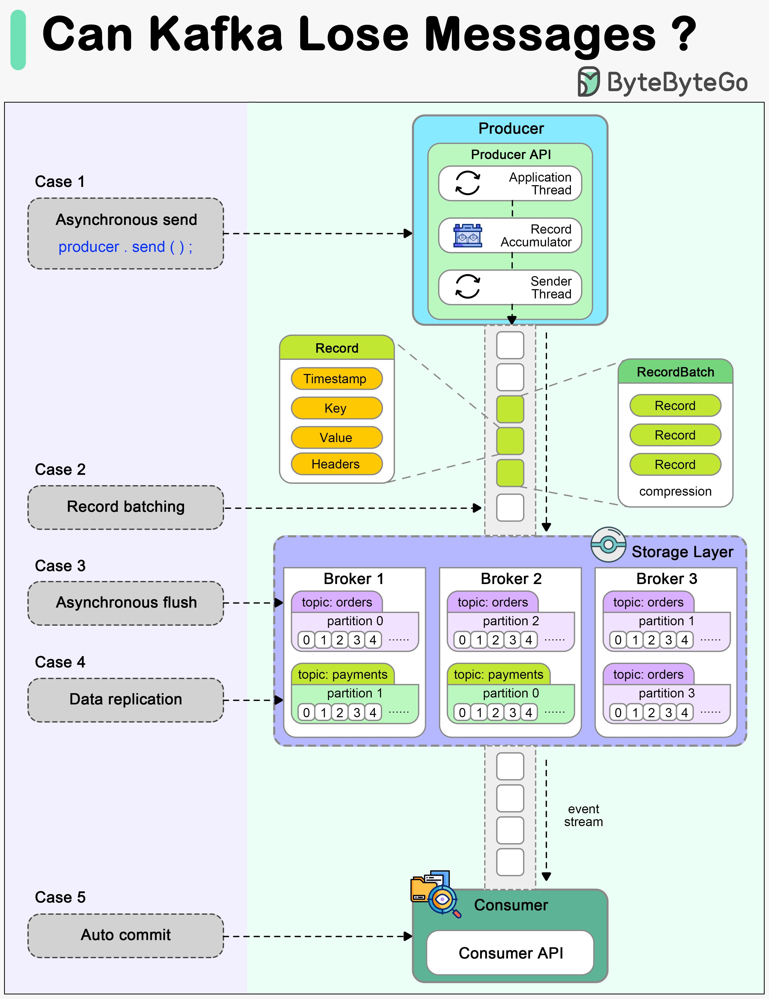

Error handling is one of the most important aspects of building reliable systems.
Today, we will discuss an important topic: Can Kafka lose messages?

A common belief among many developers is that Kafka, by its very design, guarantees no message loss. However, understanding the nuances of Kafka’s architecture and configuration is essential to truly grasp how and when it might lose messages, and more importantly, how to prevent such scenarios.
The diagram above shows how a message can be lost during its lifecycle in Kafka.
When we call producer.send() to send a message, it doesn’t get sent to the broker directly. There are two threads and a queue involved in the message-sending process:
We need to configure proper ‘acks’ and ‘retries’ for the producer to make sure messages are sent to the broker.
A broker cluster should not lose messages when it is functioning normally. However, we need to understand which extreme situations might lead to message loss:
The messages are usually flushed to the disk asynchronously for higher I/O throughput, so if the instance is down before the flush happens, the messages are lost.
The replicas in the Kafka cluster need to be properly configured to hold a valid copy of the data. The determinism in data synchronization is important.
Kafka offers different ways to commit messages. Auto-committing might acknowledge the processing of records before they are actually processed. When the consumer is down in the middle of processing, some records may never be processed.
A good practice is to combine both synchronous and asynchronous commits, where we use asynchronous commits in the processing loop for higher throughput and synchronous commits in exception handling to make sure the last offset is always committed.